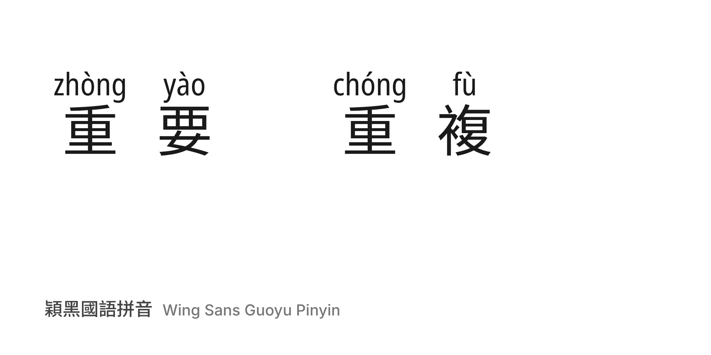

Wing Sans Guoyu Pinyin prints the reading of every Chinese character — Taiwan Mandarin (Guoyu) in Hanyu Pinyin — right above it, so learners can read text aloud without looking anything up. The reading is part of the glyph, so no extra typesetting or annotation tools are needed: it works in applications with OpenType support, such as Microsoft Word, Canva, Affinity and modern web browsers.

Many characters have more than one reading. The font picks the right one from the surrounding word through OpenType contextual alternates: 重 is zhòng in 重要 (important) but chóng in 重複 (to repeat). When the automatic choice is wrong, typing a digit after the character selects another reading.
Wing Sans is made for students, teachers and self-learners who can read Chinese but are unsure how to say it, and for anyone preparing handouts, slides or signage that should be read aloud.
Built with Wing Font from Noto Sans TC (characters) and Noto Sans (annotations). Reading data: 中華民國教育部（Ministry of Education, R.O.C.）《重編國語辭典修訂本》 and 《國語辭典簡編本》 (CC BY-ND 3.0 TW); see data attribution.
To contribute, see github.com/Wing-Font/wing-sans-chinese.